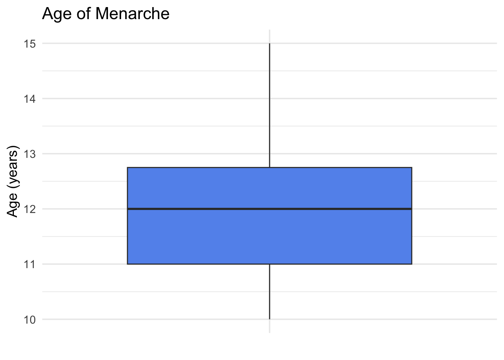
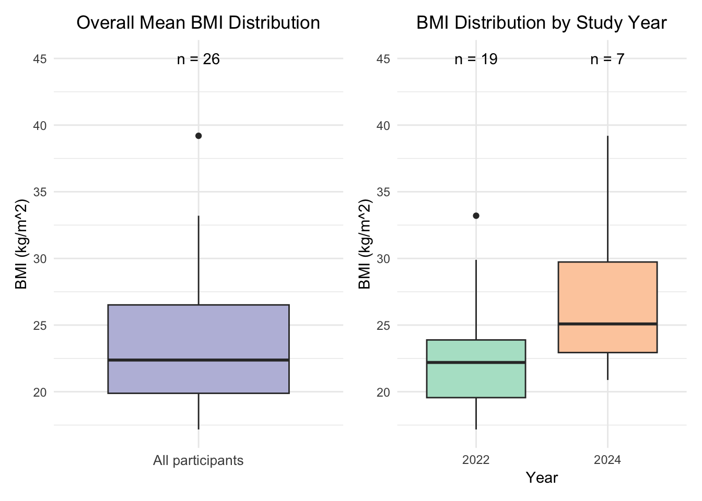
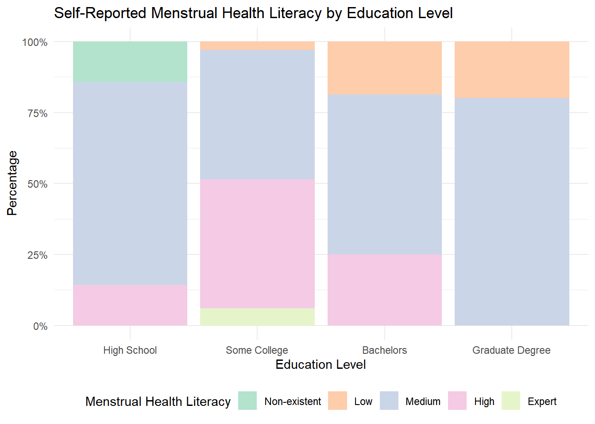
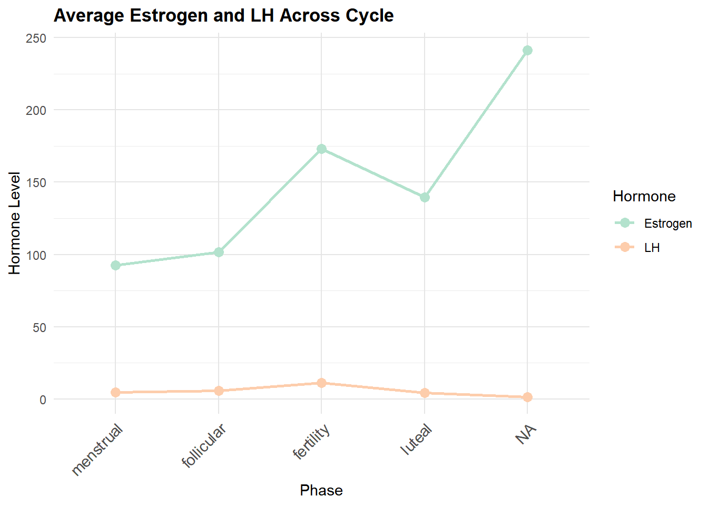
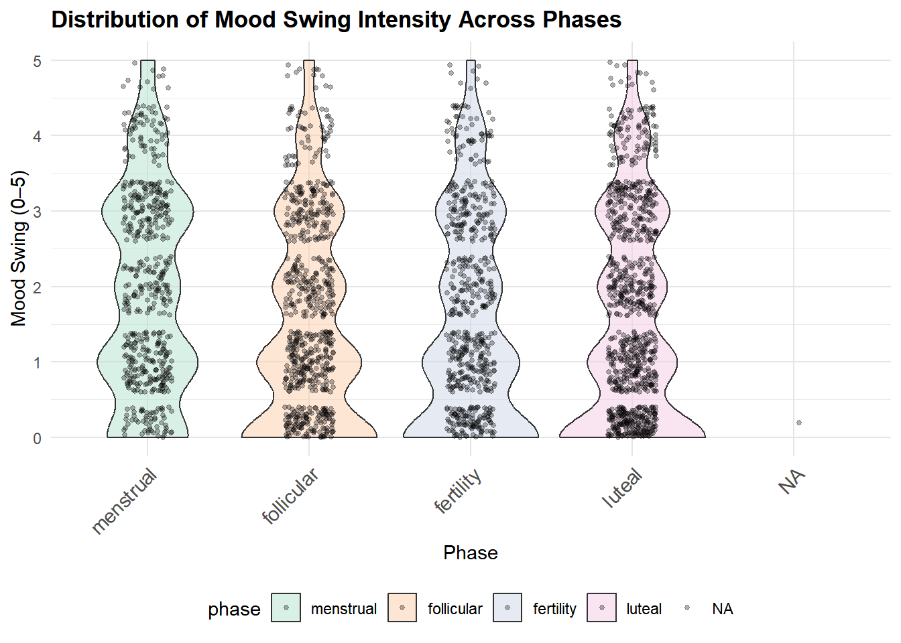
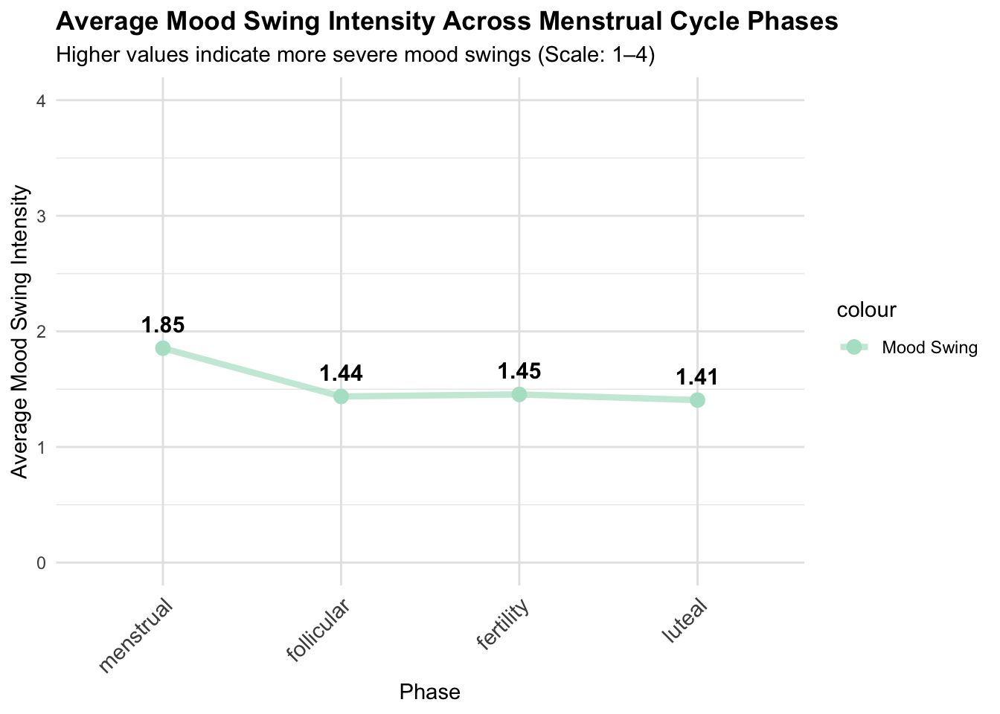
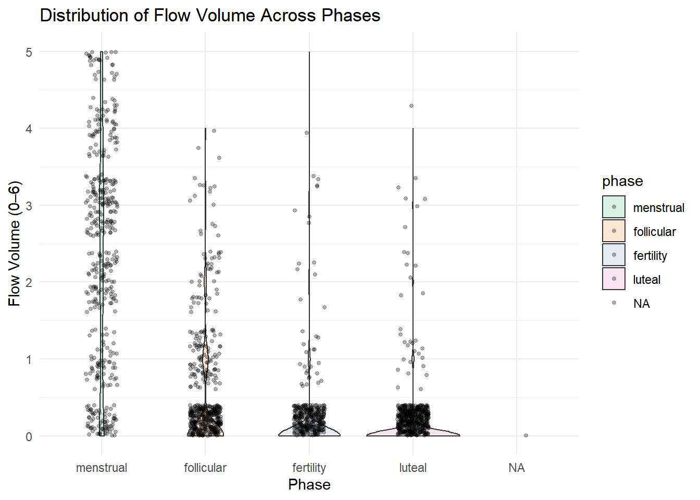
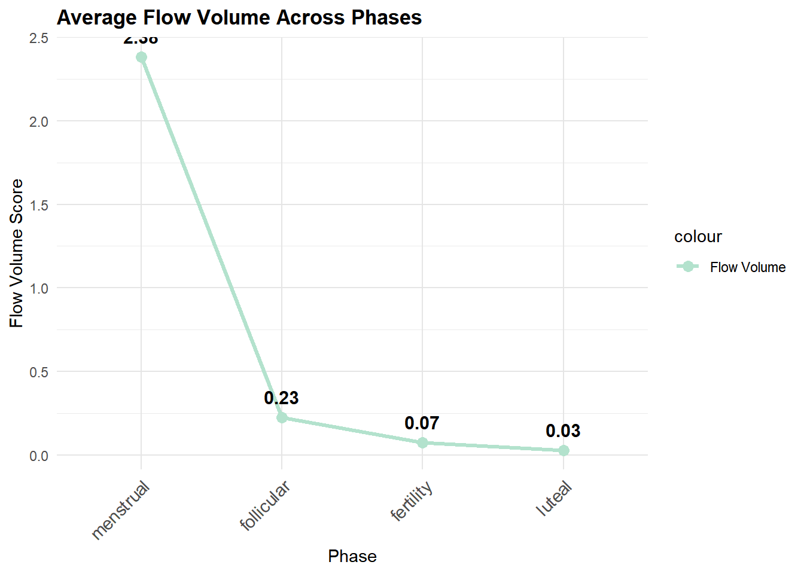
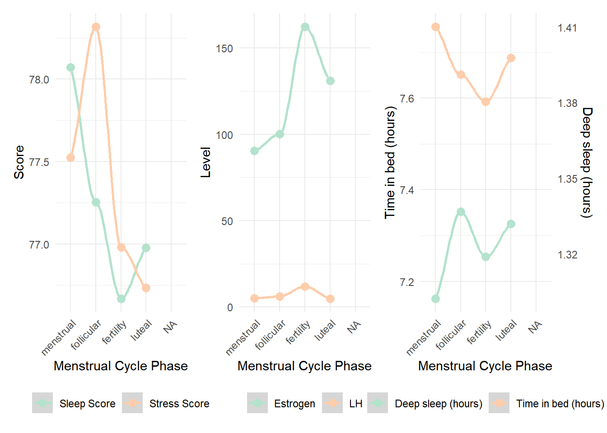
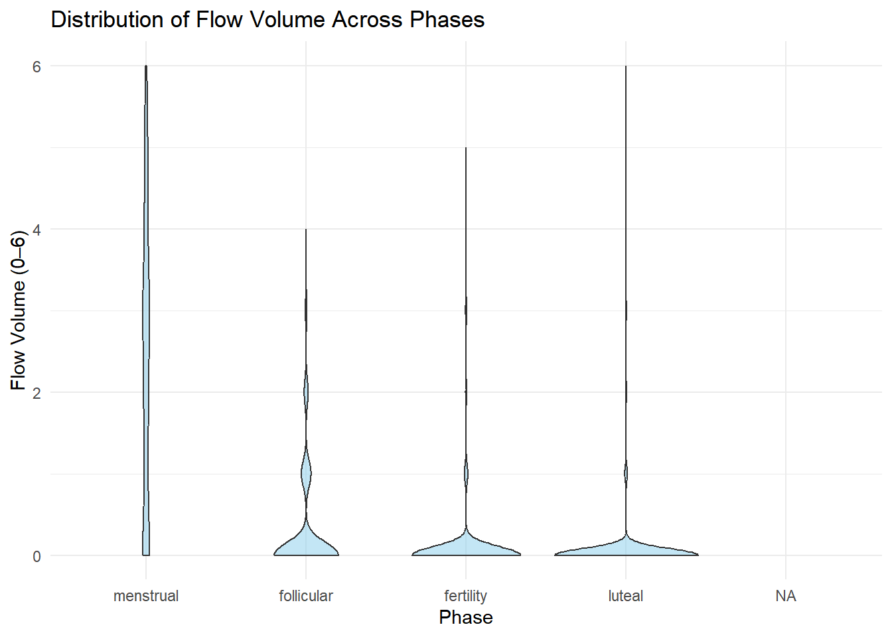

Report
# Load packages
library(tidyverse)
library(ggplot2)
library(modelr)
library(mgcv)
library(dplyr)
library(tidyr)
library(patchwork)
library(lme4)
library(lmerTest)
library(gt)
library(ggsci)
library(knitr)
library(broom.mixed) # for tidy
# Set plot theme
theme_set(theme_minimal() + theme(legend.position = "bottom"))
options(
ggplot2.discrete.colour = function(...) scale_colour_brewer(..., palette = "Pastel2"),
ggplot2.discrete.fill = function(...) scale_fill_brewer(..., palette = "Pastel2"),
ggplot2.continuous.colour = function(...) scale_colour_distiller(..., palette = "PuRd"),
ggplot2.continuous.fill = function(...) scale_fill_distiller(..., palette = "PuRd")
)Motivation
Half of the world’s population has experienced or will experience menstruation; for many, this physiologic function occurs monthly for several decades. For young adults who menstruate, symptoms and regular menstruation can be a vital health indicator. Abnormal symptoms can further suggest reproductive tract abnormalities, such as uterine fibroids or endometriosis. However, abnormal symptoms such as heavy bleeding or extreme pain can also be attributed to lifestyle characteristics. By leveraging a cohort of young adult menstruators, we hope to better understand the relationship between physiological menstrual characteristics and lifestyle factors such as stress, sleep, and exercise. Understanding how day-to-day factors influence menstrual health can help individuals who menstruate understand how to better manage concerning symptoms or identify when abnormal symptoms could be indicative of a more serious health concern.
Questions
- What are background characteristics of people who participated in this study?
- How does the menstrual cycle and hormones affect sleep and stress?
- How does exercise and caloric consumption affect menstrual symptoms and hormonal levels?
- How do hormonal levels affect menstrual symptoms?
- What is the significance of menstruation on self-reported symptoms of participants in this study?
Data
Data Sources
We utilized the inclusive, multimodal, longitudinal, and de-identified mcPHASES (menstrual cycle Physiological, Hormonal, and Self-Reported Events and Symptoms) dataset for menstrual health tracking with wearable devices.
Data was collected from 42 menstruating young adults in Canada over two 3-month intervals: Interval 1 (January–April 2022) and Interval 2 (July–October 2024). Participants wore Fitbit Sense smartwatches to measure physiological signals, and Mira Plus Starter Kits to track their hormone levels. Participants also self-reported daily symptom experiences like cramps, sleep quality, and stress levels via a smartphone diary app.
The original dataset contains 23 structured tables organized by signal category. For this project, we focused on the lifestyle factors such as exercise, sleep, and stress, and menstrual cycle symptoms. The datasets we used are the following:
- Demographics:
subject_info.csv: demographic data such as age, education, and age at menarche, and background survey responses collected at the start of the studyheight_and_weight.csv: participant’s baseline height and weight
- Hormone and Symptoms:
hormones_and_selfreport.csv：hormone data (LH, E3G, PdG) from the Mira fertility device and daily self-reported symptom survey responses (e.g., cramps, mood, menstrual flow) on a 6-level Likert-type scale from 0 (“Not at all”) to 5 (“Very high”)
- Lifestyle Factors:
stress_score.csv: daily Stress Management Score from those who have access to the Stress Management experiencesleep.csv: sleep session logs including timestamps, durations, and quality metrics collected by Fitbitsleep_score.csv: daily sleep score breakdowns provided by Fitbit, summarizing overall sleep quality based on multiple contributing factors
In total, we have 5 tidy dataframes:
subject_info- Contains demographics and background survey responses data where each row represents a participant
- A total of 62 observations of 18 variables
hormone_symptoms- Contains daily hormone and self-reported symptom-related data
- A total of 5659 observations of 36 variables
sleep_stress_daily- Contains daily sleep and stress related data
- A total of 5400 observations of 7 variables
exercise_daily- Contains daily exercise related data
- A total of 1744 observations of 12 variables
all_daily_data- The multimodal merged version of dataframes 2,3,4, where each row represents a daily data for a person in a specific study year, including hormone and self-reported symptoms, sleep score, stress score, daily exercise data.
- A total of 5659 observations of 50 variables
All dataframes can be linked by participant’s id.
Besides subejct_info, other dataframes can be further
linked by day_in_study and study_interval.
subject_info - Subject-Relevant Data
The subject_info dataframe contains participants
demographics data from subject_info.csv and
height_and_weight.csv, as well as participants study
enrollment year (this piece of information is from
hormones_and_selfreport.csv).
It contains a total of 62 observations of 18 variables. Some key variables are the following:
id: participant’s unique identifier- Age relevant variables:
birth_yearandage_of_first_menarche - Height and weight related variables:
avg_height,avg_weight,bmi - Study enrollment related information:
study(flag of which study the participant enrolled in,1=2022,2=2024,3=both),year(the year of study) - Categorical/Factor variables like
ethnicity,education,self_report_menstrual_health_literacy, etc.
ht_wt = read_csv("data/height_and_weight.csv")|>
janitor::clean_names() |>
# calculate mean height/weight
rowwise() |>
mutate(
avg_height = mean(c(height_2022, height_2024), na.rm = TRUE),
avg_weight = mean(c(weight_2022, weight_2024), na.rm = TRUE)
) |>
ungroup()
# import csv file
hormones_and_selfreport = read_csv("data/hormones_and_selfreport.csv") |>
janitor::clean_names()
# extract study_flag
study_flag <- hormones_and_selfreport |>
distinct(id, study_interval) |>
mutate(flag = 1,
study_interval = paste0("study_", study_interval)) |>
pivot_wider(
names_from = study_interval,
values_from = flag,
values_fill = 0
)
# read in subject-info.csv
subject_info_raw = read_csv("data/subject-info.csv") |>
janitor::clean_names()
subject_info <- subject_info_raw |>
# merging
left_join(ht_wt, by = "id") |>
left_join(study_flag, by = "id") |>
# add a study_flag
mutate(
study = case_when(
study_2022 == 1 & study_2024 == 1 ~ 3L, # both 2022 & 2024
study_2022 == 1 & study_2024 == 0 ~ 1L,
study_2024 == 1 & study_2022 == 0 ~ 2L,
TRUE ~ NA_integer_
)
) |>
# pivot_long for wt & ht
pivot_longer(
cols = c(weight_2022, weight_2024, height_2022, height_2024),
names_to = c(".value", "year"),
names_sep = "_"
) |>
rename(
weight_yr = weight,
height_yr = height
) |>
# keep only the relevant study year
filter(
(study == 1 & year == 2022) |
(study == 2 & year == 2024) |
(study == 3)
) |>
# calculate age
mutate(
year = as.numeric(year),
birth_year = as.numeric(birth_year),
age = year - birth_year
) |>
# get a mean age for each id
group_by(id) |>
mutate(
mean_age = mean(age, na.rm = TRUE)
) |>
ungroup() |>
# get BMI
mutate(
bmi = weight_yr / ( (height_yr / 100)^2 )
)|>
# convert NaN to NA
mutate(
across(c(avg_weight, avg_height),
~ if_else(is.nan(.), NA_real_, .))
) |>
#this factors variables and also creates "gender abrv", "education abrv", "race_category" which are simplified versions of these variables for use in tables, some figures, and regression models later on
mutate(
education = str_trim(education),
education_abrv = case_when(
education == "High school degree or equivalent (e.g. GED)" ~ "High School",
education == "Some university/ post-secondary, no degree" ~ "Some College",
education == "Bachelor's degree (e.g. BA, BS)" ~ "Bachelors",
education %in% c("Master's degree (e.g. MA, MS, MEd)", "Doctorate or professional degree") ~ "Graduate Degree",
TRUE ~ "Other"),
education_abrv = factor(
education_abrv,
levels = c("High School", "Some College", "Bachelors", "Graduate Degree", "Other"),
ordered = TRUE),
self_report_menstrual_health_literacy = factor(
self_report_menstrual_health_literacy,
levels = c("Non-existent", "Low", "Medium", "High", "Expert"),
ordered = TRUE),
gender_abrv = case_when(
gender %in% c("Gender Fluid", "Non-binary") ~ "Gender Fluid or Non-binary",
gender %in% c("Prefer not to say", "Other") ~ "Prefer not to say or Other",
gender == "Woman" ~ "Woman"),
gender_abrv = factor(gender_abrv, levels = c("Woman", "Gender Fluid or Non-binary", "Prefer not to say or Other")),
sexually_active = factor(sexually_active, levels = c("Yes", "No", "Prefer not to say")),
race_category = case_when(
ethnicity %in% c("East Asian", "South Asian", "Southeast Asian") ~ "Asian",
ethnicity == "White" ~ "White",
TRUE ~ "Other"),
race_category = factor(
race_category, levels = c("Asian", "White", "Other"))) |>
# only need 1 study_interval flag to indicate the study year
mutate(study_interval = year) |>
select(-study_2022, -study_2024, year, -study) |>
# rearrange the column order
select(
id,
study_interval,
everything()
)all_daily_data - Merged Multimodal Daily Data
The all_daily_data is a merged multimodal dataframe that
contains all daily-level data from
hormone_symptoms, exercise_daily, and
sleep_stress_daily dataframes, and used
hormone_symptoms as the anchor dataframe. Each row
represents a daily data for a person in a specific study year (including
sleep score, stress score, daily exercise data, hormone and
self-reported symptoms).
It contains a total of 5659 observations of 50 variables, with unique
combination of key identifiers (id,
study_interval, and day_in_study). Additional
flag variables that are not in 3 multimodal dataframes are
exercise_flag and sleep_stress_flag to
indicate if the observation day had at least one recorded exercise
session or if both stress and sleep scores are present.
all_daily_data <- hormone_symptoms |>
# MERGE exercise & hormone
left_join(exercise_daily, by = c("id", "study_interval", "day_in_study")) |>
# add flag exercised_flag for easy filtering in the future analyses
# only need to keep exercised_flag==1 to have all rows with exercise data
mutate(
exercised_flag = ifelse(!is.na(n_sessions) & n_sessions > 0, 1, 0),
menstruation = factor(if_else(phase == "menstrual", 1, 0),
levels = c(0, 1),
labels = c("No", "Yes"))
) |>
# MERGE sleep & stress score data
# noticed hormone_symptoms df has a stress_score column
# drop it
select(-stress_score) |>
left_join(sleep_stress_daily, by = c("id", "study_interval", "day_in_study")) |>
# add flag sleep_stress_flag for easy filtering in the future analyses
mutate(
sleep_stress_flag = ifelse(
!is.na(stress_score) & !is.na(sleep_score),1,0
)
)
# MERGE demographic data
# left_join(subject_info, by = c("id", "study_interval")) Exploratory Data Analysis
Participant Characteristics
summary_table_gt| Mean (Max-Min) or Count (%) | ||
|---|---|---|
| Age | 21.2 (18–29) | |
| BMI | 23.8 (17.2-39.2) | |
| Age at Menarche | 11.9 (10–15) | |
| Ethnicity | African | 1 (1.6%) |
| Caribbean | 1 (1.6%) | |
| East Asian | 20 (32.3%) | |
| Latina | 2 (3.2%) | |
| Middle Eastern | 7 (11.3%) | |
| South Asian | 1 (1.6%) | |
| Southeast Asian | 16 (25.8%) | |
| White | 14 (22.6%) | |
| Gender | Woman | 55 (88.7%) |
| Gender Fluid or Non-binary | 3 (4.8%) | |
| Prefer not to say or Other | 4 (6.5%) | |
| Education | High School | 7 (11.3%) |
| Some College | 34 (54.8%) | |
| Bachelors | 16 (25.8%) | |
| Graduate Degree | 5 (8.1%) | |
| Sexually Active | Yes | 22 (35.5%) |
| No | 36 (58.1%) | |
| Prefer not to say | 4 (6.5%) |
The cohort includes 42 participants with a median age of ~21 years and a small number of older outliers (ages 27 and 29). This relatively narrow, young age range reduces age-related heterogeneity in reproductive hormones and symptomatic expression, helping to isolate phase-related effects.
The average age of menarche was 11.9, though some participants reported first menstruating as late as age 15. Our participants largely identified as women (88.7%) and as Asian (59.7%) or white (22.6%). More than 4 in 5 participants had completed at least some college, with 25.8% having a college degree and 8.1% having a graduate degree.
Age of first menarche
menarche_plot
Age of first menarche ranges roughly from 10 to 15 years with a median around 12 and a tight IQR (≈11–12.75). This homogeneous menarche distribution suggests a relatively standard reproductive development history across participants; because very early or very late menarche can influence cycle regularity and hormonal profiles, the lack of extreme variability here supports attributing observed hormone–symptom patterns primarily to current cycle phase rather than developmental differences.
BMI
bmi_boxplots Among the 26 participants with BMI data, the median BMI ≈ 22.5 kg/m² (IQR ≈ 20–26) with one high outlier (~39). Overall, most participants fall in the normal-to-overweight range. Because adiposity influences sex steroid metabolism and inflammation, it is important to note that BMI variability could contribute to between-person differences in both hormone levels and symptom severity; including BMI as a covariate in later models may help separate phase effects from adiposity-driven variation.
Menstrual Health Literacy by Education
education_health_lit This figure shows self-reported participant menstrual health literacy by educational attainment. While most participants report medium to high menstrual health literacy,some reported non-existent, low, or expert level knowledge. Generally, educational attainment was not clearly visually correlated with greater knowledge about menstrual health.
Hormone and Symptoms
LH & Estrogen
We want to examine average estrogen and LH levels across menstrual cycle phases to see if hormonal patterns match biological expectations

Estrogen levels are highest in the Fertility (ovulatory) phase, second highest in Luteal, and relatively low in Menstrual, gradually rising from Follicular to Luteal. LH is much lower than estrogen overall, peaking sharply in Fertility and remaining low in the other phases.
Mood Swing
Moodswing Distribution Across Phases
Using violin plots to assess whether menstrual cycle hases influence mood swing intensity.
## Warning: Removed 2339 rows containing non-finite outside the scale range
## (`stat_ydensity()`).## Warning: Groups with fewer than two datapoints have been dropped.
## ℹ Set `drop = FALSE` to consider such groups for position adjustment purposes.## Warning: Removed 2910 rows containing missing values or values outside the
## scale range (`geom_point()`).
Violin plots show substantial inter-individual variability. Menstrual phase has the highest mood swing intensity (right-skewed distribution, peak around 1.85), while Luteal phase shows lower values with a wider base (more individuals with low mood swing).
Average Mood Swing Across Phases To visualize general trends, we should summarize the average mood swing intensity across phases.

Average mood swing is highest in Menstrual phase (1.85), lowest in Luteal phase (1.41), with intermediate levels in follicular and fertility phases.
Flow Volume
Flow Volume Distribution Across Phases
To assess flow volume distribution patterns, we visualize flow volume variation across phases with violin plots.
## Warning: Removed 2592 rows containing non-finite outside the scale range
## (`stat_ydensity()`).## Warning: Groups with fewer than two datapoints have been dropped.
## ℹ Set `drop = FALSE` to consider such groups for position adjustment purposes.## Warning: Removed 3850 rows containing missing values or values outside the
## scale range (`geom_point()`).
Luteal phase shows a right-skewed distribution, indicating most low-flow observations but a few high-flow days. Menstrual phase is narrow and tall, indicating consistently higher flow intensity.
Average Flow Volume Across Phases
Summarize average flow volume to observe general trends across the menstrual cycle. 
Menstrual phase has the highest average flow (2.38), luteal is lowest (0.03), fertility is 0.07, and follicular is 0.23.
Appetite
Average Appetite Across Phases
Summarize average appetite to observe general trends across the
menstrual cycle.

Appetite is highest in Fertility (2.96), lowest in Follicular (2.85), Luteal 2.95, Menstrual 2.90.
Sleep and stress
sleep_stress_df = all_daily_data|>
filter(!is.na(stress_score) & !is.na(sleep_score) & !is.na(timeinbed_mean)) |>
filter(stress_score != 0)|>
select(id, study_interval, day_in_study, phase, lh, estrogen, sleep_score, stress_score, timeinbed_mean, deep_sleep_in_minutes, total_active_min, moodswing_score) |>
mutate(
phase = fct_relevel(phase,"menstrual", "follicular", "fertility", "luteal")
)
sleep_stress_df = full_join(subject_info, sleep_stress_df, join_by(id))Menstruators spent more time in bed during menstrual time but their deep sleep hours were lowest. This showed that the physical exhaustion during menstrual days requiring them to rest but preventing them from having a restorative sleep quality. Follicular time is the when menstruators feel most energetic and spent less time in bed but having much better deep sleep. We explore the changes of the stress score with the menstrual cycle. The participants slept best during the menstrual time, probably a good sign to rest well during this time. The lowest sleep score were recorded during ovulation/ fertility time in which the increased estrogen and lh levels may contribute to this low sleep quality. The higher stress score the less stressful people experience. In this study, the participants showed the least stressful during folicular period , as the bodies are full of energy. The most stressful time is during luteal period.
# plot the sleep vs stress score by phases
plot_1 =
sleep_stress_df |>
group_by(phase) |>
summarize(
mean_sleep_score = mean(sleep_score, na.rm = TRUE),
mean_stress_score = mean(stress_score, na.rm = TRUE),
.groups = "drop"
) |>
pivot_longer(
cols = starts_with("mean_"),
names_to = "metric",
values_to = "value"
) |>
mutate(
metric = recode(metric,
mean_sleep_score = "Sleep Score",
mean_stress_score = "Stress Score")
) |>
ggplot(aes(x = phase, y = value, color = metric, group = metric)) +
geom_smooth(linewidth= 1) +
geom_point(size = 3) +
labs(color = "Metric", y = "Mean Score", x = "Phase") +
labs(
x = "Menstrual Cycle Phase",
y = "Score"
) +
theme_minimal() +
theme(legend.position = "bottom",
legend.title = element_blank(),
axis.text.x = element_text(angle = 45, hjust = 1))
# plot the hormone changes
coeff = 5.5
plot_2 =
sleep_stress_df |>
group_by(phase) |>
summarize(
mean_lh = mean(lh, na.rm = TRUE),
mean_estrogen = mean( estrogen, na.rm = TRUE),
.groups = "drop"
) |>
pivot_longer(
cols = starts_with("mean_"),
names_to = "metric",
values_to = "value"
) |>
mutate(
metric = recode(metric,
mean_lh = "LH",
mean_estrogen = "Estrogen")
) |>
ggplot(aes(x = phase, y = value, color = metric, group = metric)) +
geom_smooth(linewidth= 1) +
geom_point(size = 3) +
labs(color = "Metric", y = "level", x = "Phase") +
labs(
x = "Menstrual Cycle Phase",
y = "Level"
) +
theme_minimal() +
theme(legend.position = "bottom",
legend.title = element_blank(),
axis.text.x = element_text(angle = 45, hjust = 1))
# Plot the time in bed and deep sleep in minutes in phases
plot_3 =
sleep_stress_df |>
group_by(phase)|>
summarize(
mean_timeinbed = mean(timeinbed_mean/60, na.rm = TRUE),
mean_deep_sleep_in_minutes = mean((deep_sleep_in_minutes/60)*coeff, na.rm = TRUE)
)|>
pivot_longer(
cols = starts_with("mean_"),
names_to = "metric",
values_to = "value"
) |>
mutate(
metric = recode(metric,
mean_timeinbed = "Time in bed (hours)",
mean_deep_sleep_in_minutes = "Deep sleep (hours)")
) |>
ggplot(aes(x = phase, y = value, color = metric, group = metric)) +
geom_smooth(linewidth= 1) +
geom_point(size = 3) +
labs(color = "Metric", y = "level", x = "Phase") +
labs(
x = "Menstrual Cycle Phase",
y = "Level"
) +
scale_y_continuous(
# Features of the first axis
name = "Time in bed (hours)",
# Add a second axis and specify its features
sec.axis = sec_axis(~./coeff, name="Deep sleep (hours)")
) +
theme_minimal() +
theme(legend.position = "bottom",
legend.title = element_blank(),
axis.text.x = element_text(angle = 45, hjust = 1))
plot_1 + plot_2 + plot_3
# plot the variation of time in bed by menstrual phases
timeinbed_plot =
sleep_stress_df|>
#filter(!is.na(study_interval) & !is.na(phase)) |>
group_by(phase, id) |>
summarize(
timeinbed = mean(timeinbed_mean/60)
)|>
ggplot(aes(x = phase, y = timeinbed, fill = phase)) +
geom_violin(alpha = 0.5, width = 0.5)+
geom_boxplot(width = 0.2)+
labs(
x = " ",
y = "Time in bed (hrs)"
) +
theme(legend.position = "none")
# plot the variation of deep sleep score by menstrual phases
deep_sleep_plot =
sleep_stress_df|>
#filter(!is.na(study_interval) & !is.na(phase)) |>
group_by(phase, id) |>
summarize(
mean_deep_sleep = mean(deep_sleep_in_minutes/60)
)|>
ggplot(aes(x = phase, y = mean_deep_sleep, fill = phase)) +
geom_violin(alpha = 0.5, width = 0.5)+
geom_boxplot(width = 0.2)+
labs(
x = " ",
y = "Deep sleep (hrs)"
) +
theme(legend.position = "none")
# plot the variation of sleep score by menstrual phases
sleep_score_boxplot =
sleep_stress_df |>
#filter(!is.na(study_interval) & !is.na(phase)) |>
ggplot(aes(x = phase, y = sleep_score, fill = phase))+
geom_violin(alpha = 0.5, width = 0.5)+
geom_boxplot(width = 0.2)+
labs(
x = " ",
y = "Sleep score"
) +
theme(legend.position = "none")
# plot the variation of stress score by menstrual phases
stress_score_boxplot =
sleep_stress_df |>
#filter(!is.na(study_interval) & !is.na(phase)) |>
filter(stress_score != 0)|>
ggplot(aes(x = phase, y = stress_score, fill = phase))+
geom_violin(alpha = 0.5, width = 0.5)+
geom_boxplot(width = 0.2)+
labs(
x = " ",
y = "Stress score"
) +
theme(legend.position = "none")
(timeinbed_plot|deep_sleep_plot)/
(sleep_score_boxplot |stress_score_boxplot)
View the stress and sleep score across menstrual cycle phases for each ethnicity
sleep_stress_df |>
group_by(phase, ethnicity) |>
summarize(
mean_sleep_score = mean(sleep_score, na.rm = TRUE),
mean_stress_score = mean(stress_score, na.rm = TRUE),
.groups = "drop"
) |>
pivot_longer(
cols = starts_with("mean_"),
names_to = "metric",
values_to = "value"
) |>
drop_na()|>
mutate(
metric = recode(metric,
mean_sleep_score = "Sleep Score",
mean_stress_score = "Stress Score")
) |>
ggplot(aes(x = phase, y = value, color = ethnicity, group = ethnicity)) +
geom_line(size = 1) +
geom_point(size = 3) +
facet_grid(~ metric) +
labs(color = "Ethnicity", y = "Mean Score", x = "Phase") +
labs(
title = "stress and sleep score Across Menstrual Cycle Phases",
x = "Menstrual Cycle Phase",
y = "score"
) +
theme_minimal() +
theme(axis.text.x = element_text(angle = 45, hjust = 1))
Our dataset are from two studies in two different times, year 2022 and year 2024 in which the 2024 cohort is a subset from 2022 cohorts. Therefore the assumptions of independence is violated so we cannot use statistical tests that required independence assumptions. Instead, we used generalized linear mixed effects model to evaluate the significant different of stress score and sleep score between menstrual phases.
m1 <- lmer(stress_score ~ phase +(1 | id), data = sleep_stress_df)
tidy(m1, effects = "fixed")|>
select(term, estimate, std.error,p.value) |>
mutate(
significant = ifelse(p.value < 0.05, "Yes", "No")) |>
knitr::kable(digits = 3)| term | estimate | std.error | p.value | significant |
|---|---|---|---|---|
| (Intercept) | 76.762 | 0.614 | 0.000 | Yes |
| phasefollicular | 0.291 | 0.213 | 0.172 | No |
| phasefertility | -0.594 | 0.211 | 0.005 | Yes |
| phaseluteal | -0.525 | 0.198 | 0.008 | Yes |
m2 <- lmer(sleep_score ~ phase +(1 | id), data = sleep_stress_df)
tidy(m2, effects = "fixed")|>
select(term, estimate, std.error,p.value) |>
mutate(
significant = ifelse(p.value < 0.05, "Yes", "No")) |>
knitr::kable(digits = 3)| term | estimate | std.error | p.value | significant |
|---|---|---|---|---|
| (Intercept) | 77.436 | 0.709 | 0 | Yes |
| phasefollicular | -1.037 | 0.283 | 0 | Yes |
| phasefertility | -1.342 | 0.281 | 0 | Yes |
| phaseluteal | -1.126 | 0.263 | 0 | Yes |
Modelling
Hormone and symtoms model
Flow Volume Distribution Across Phases
To assess flow volume distribution patterns, we visualize flow volume variation across phases with violin plots.
## Warning: Removed 2567 rows containing non-finite outside the scale range
## (`stat_ydensity()`).## Warning: Groups with fewer than two datapoints have been dropped.
## ℹ Set `drop = FALSE` to consider such groups for position adjustment purposes.
Luteal phase shows a right-skewed distribution, indicating most low-flow observations but a few high-flow days. Menstrual phase is narrow and tall, indicating consistently higher flow intensity.
Appetite vs Estrogen
Explore the relationship between estrogen levels and appetite scores, accounting for repeated measures.
## Linear mixed model fit by REML. t-tests use Satterthwaite's method [
## lmerModLmerTest]
## Formula: appetite_score ~ estrogen + (1 | id)
## Data: hormone_symptoms
##
## REML criterion at convergence: 7218.3
##
## Scaled residuals:
## Min 1Q Median 3Q Max
## -5.0223 -0.5805 0.0292 0.5269 3.8879
##
## Random effects:
## Groups Name Variance Std.Dev.
## id (Intercept) 0.1722 0.4150
## Residual 0.5272 0.7261
## Number of obs: 3215, groups: id, 42
##
## Fixed effects:
## Estimate Std. Error df t value Pr(>|t|)
## (Intercept) 2.897e+00 6.809e-02 4.769e+01 42.539 <2e-16 ***
## estrogen 1.137e-04 1.357e-04 3.212e+03 0.838 0.402
## ---
## Signif. codes: 0 '***' 0.001 '**' 0.01 '*' 0.05 '.' 0.1 ' ' 1
##
## Correlation of Fixed Effects:
## (Intr)
## estrogen -0.276Random intercept variance (0.1746) indicates participant-specific baseline appetite differences. The fixed effect of estrogen is small (0.00013 per unit) and not significant (t = 0.869).
Stress score model
# model
m4 <- lmer(stress_score ~ phase + deep_sleep_in_minutes +
timeinbed_mean + total_active_min + moodswing_score +(1 | id), data = sleep_stress_df)
tidy(m4, effects = "fixed", conf.int = TRUE)|>
select(term, estimate, std.error, conf.low, conf.high,p.value) |>
mutate(
significant = ifelse(p.value < 0.05, "Yes", "No")) |>
knitr::kable(digits = 3)| term | estimate | std.error | conf.low | conf.high | p.value | significant |
|---|---|---|---|---|---|---|
| (Intercept) | 73.254 | 1.848 | 69.591 | 76.917 | 0.000 | Yes |
| phasefollicular | -1.166 | 0.866 | -2.869 | 0.536 | 0.179 | No |
| phasefertility | -0.964 | 0.854 | -2.643 | 0.714 | 0.259 | No |
| phaseluteal | -0.840 | 0.753 | -2.321 | 0.641 | 0.265 | No |
| deep_sleep_in_minutes | 0.032 | 0.016 | 0.001 | 0.063 | 0.043 | Yes |
| timeinbed_mean | 0.009 | 0.004 | 0.002 | 0.016 | 0.013 | Yes |
| total_active_min | -0.009 | 0.008 | -0.024 | 0.006 | 0.232 | No |
| moodswing_score | -0.199 | 0.255 | -0.701 | 0.303 | 0.436 | No |
Multimodel Modeling
This section leverages the same cleaned data set used in other parts
of this analysis. For further simplification with regression, two new
variables were created - race_simplified, which collapses
specific ethnicity categories into broader racial groups (any with a
count < 3 was put into other if there was not an applicable category
already). Additionally, for simplicity of running the regression
focusing on solely menstrual symptoms, a binary variable reporting
menstruation as “no” (0) or “yes” (1) was created.
merged_df_model was created to easily run both demographic
and daily data through a regression model.
#Symptom Model Table
symptom_model_table| term | estimate | std.error | statistic | p.value |
|---|---|---|---|---|
| (Intercept) | -2.8740063 | 0.2617214 | -10.9811667 | 0.0000000 |
| fatigue_score | 0.0828337 | 0.0393637 | 2.1043197 | 0.0353506 |
| cramps_score | 0.6793591 | 0.0390455 | 17.3991514 | 0.0000000 |
| sleepissue_score | -0.0988167 | 0.0408318 | -2.4200929 | 0.0155165 |
| exerciselevel_score | -0.0361530 | 0.0448746 | -0.8056439 | 0.4204482 |
| appetite_score | 0.0213400 | 0.0543029 | 0.3929812 | 0.6943334 |
| bloating_score | 0.1999499 | 0.0455794 | 4.3868442 | 0.0000115 |
| moodswing_score | 0.0239383 | 0.0396493 | 0.6037511 | 0.5460091 |
| indigestion_score | 0.0004675 | 0.0460566 | 0.0101495 | 0.9919020 |
| sorebreasts_score | 0.1716200 | 0.0473757 | 3.6225284 | 0.0002917 |
| sd__(Intercept) | 0.7640276 | NA | NA | NA |
#Hormone Model Table
physiology_model_table| term | estimate | std.error | statistic | p.value |
|---|---|---|---|---|
| (Intercept) | -0.0847353 | 0.1118287 | -0.7577244 | 0.4486160 |
| estrogen | -0.0107894 | 0.0006200 | -17.4031601 | 0.0000000 |
| lh | -0.0399829 | 0.0076412 | -5.2325559 | 0.0000002 |
| sd__(Intercept) | 0.5473760 | NA | NA | NA |
We ran a binomial regression between menstruation and self-reported
symptoms. The results of our preliminary regression analysis show that
menstruation was positively associated with fatigue,
cramps, and bloating. There was a negative
association between menstruation and reported sleep issues
and sore breasts as well as measured estrogen
and luteinizing hormone (lh).
Demographic and Lifestyle Factors and Symptoms
Focusing on symptoms that were reported as statistically significant
#Fatigue Model Table
fatigue_model_table| term | estimate | std.error | statistic | df | p.value |
|---|---|---|---|---|---|
| (Intercept) | -0.2604217 | 2.1466015 | -0.1213181 | 189 | 0.9035679 |
| total_active_min | 0.0002023 | 0.0026844 | 0.0753474 | 189 | 0.9400180 |
| sleep_score | 0.0053336 | 0.0140101 | 0.3806943 | 189 | 0.7038576 |
| stress_score | -0.0375512 | 0.0183168 | -2.0500948 | 189 | 0.0417360 |
| factor(education_abrv, ordered = FALSE)Some College | -0.3771962 | 0.3450844 | -1.0930550 | 189 | 0.2757609 |
| factor(education_abrv, ordered = FALSE)Bachelors | -3.1453540 | 0.5981174 | -5.2587573 | 189 | 0.0000004 |
| race_categoryWhite | 0.3656198 | 0.4647150 | 0.7867614 | 189 | 0.4324069 |
| race_categoryOther | -4.4100955 | 1.0598369 | -4.1611079 | 189 | 0.0000480 |
| bmi | 0.1534302 | 0.0631337 | 2.4302417 | 189 | 0.0160230 |
| age | 0.1646671 | 0.1115099 | 1.4767037 | 189 | 0.1414193 |
| lh | -0.0119495 | 0.0144548 | -0.8266844 | 189 | 0.4094584 |
| estrogen | 0.0003853 | 0.0009437 | 0.4083111 | 189 | 0.6835075 |
| sd__(Intercept) | 0.0000000 | NA | NA | NA | NA |
| sd__Observation | 1.1950942 | NA | NA | NA | NA |
#Bloating Model Table
bloating_model_table| term | estimate | std.error | statistic | df | p.value |
|---|---|---|---|---|---|
| (Intercept) | -1.9844989 | 1.6288484 | -1.2183448 | 185 | 0.2246444 |
| total_active_min | -0.0020409 | 0.0020051 | -1.0178424 | 185 | 0.3100821 |
| sleep_score | -0.0077098 | 0.0104901 | -0.7349610 | 185 | 0.4632939 |
| stress_score | 0.0195130 | 0.0143930 | 1.3557218 | 185 | 0.1768403 |
| factor(education_abrv, ordered = FALSE)Some College | 0.0726202 | 0.2594352 | 0.2799167 | 185 | 0.7798542 |
| factor(education_abrv, ordered = FALSE)Bachelors | -1.4396730 | 0.4446797 | -3.2375508 | 185 | 0.0014289 |
| race_categoryWhite | -1.7936598 | 0.3571002 | -5.0228473 | 185 | 0.0000012 |
| race_categoryOther | -3.1112942 | 0.8248872 | -3.7717813 | 185 | 0.0002180 |
| bmi | 0.2388541 | 0.0488082 | 4.8937306 | 185 | 0.0000021 |
| age | -0.0930152 | 0.0835520 | -1.1132617 | 185 | 0.2670405 |
| lh | 0.0099888 | 0.0107001 | 0.9335203 | 185 | 0.3517682 |
| estrogen | -0.0014476 | 0.0007225 | -2.0036441 | 185 | 0.0465674 |
| sd__(Intercept) | 0.0000000 | NA | NA | NA | NA |
| sd__Observation | 0.8802719 | NA | NA | NA | NA |
#Sleep Issues Model Table
sleepissues_model_table| term | estimate | std.error | statistic | df | p.value |
|---|---|---|---|---|---|
| (Intercept) | -2.9237310 | 2.0862331 | -1.4014402 | 185 | 0.1627579 |
| total_active_min | 0.0031274 | 0.0025681 | 1.2177770 | 185 | 0.2248597 |
| sleep_score | 0.0005158 | 0.0134357 | 0.0383934 | 185 | 0.9694154 |
| stress_score | 0.0019146 | 0.0184347 | 0.1038615 | 185 | 0.9173918 |
| factor(education_abrv, ordered = FALSE)Some College | -0.1288965 | 0.3322853 | -0.3879092 | 185 | 0.6985292 |
| factor(education_abrv, ordered = FALSE)Bachelors | -2.1971825 | 0.5695469 | -3.8577729 | 185 | 0.0001579 |
| race_categoryWhite | -0.2658462 | 0.4573748 | -0.5812436 | 185 | 0.5617837 |
| race_categoryOther | -5.5682087 | 1.0565177 | -5.2703412 | 185 | 0.0000004 |
| bmi | 0.2657641 | 0.0625136 | 4.2512983 | 185 | 0.0000337 |
| age | -0.0138125 | 0.1070136 | -0.1290722 | 185 | 0.8974408 |
| lh | -0.0240233 | 0.0137048 | -1.7529140 | 185 | 0.0812732 |
| estrogen | 0.0007335 | 0.0009254 | 0.7926353 | 185 | 0.4290056 |
| sd__(Intercept) | 0.0000000 | NA | NA | NA | NA |
| sd__Observation | 1.1274544 | NA | NA | NA | NA |
#Sore Breasts Model Table
sorebreasts_model_table| term | estimate | std.error | statistic | df | p.value |
|---|---|---|---|---|---|
| (Intercept) | -3.8604258 | 1.6435964 | -2.3487675 | 185 | 0.0198912 |
| total_active_min | -0.0007838 | 0.0020232 | -0.3874223 | 185 | 0.6988889 |
| sleep_score | -0.0031126 | 0.0105851 | -0.2940582 | 185 | 0.7690431 |
| stress_score | 0.0050235 | 0.0145234 | 0.3458886 | 185 | 0.7298194 |
| factor(education_abrv, ordered = FALSE)Some College | -0.2022219 | 0.2617842 | -0.7724754 | 185 | 0.4408187 |
| factor(education_abrv, ordered = FALSE)Bachelors | 0.0043528 | 0.4487059 | 0.0097007 | 185 | 0.9922705 |
| race_categoryWhite | 0.0024793 | 0.3603335 | 0.0068805 | 185 | 0.9945176 |
| race_categoryOther | -1.0957357 | 0.8323560 | -1.3164268 | 185 | 0.1896594 |
| bmi | 0.0370000 | 0.0492501 | 0.7512671 | 185 | 0.4534465 |
| age | 0.1923219 | 0.0843085 | 2.2811687 | 185 | 0.0236779 |
| lh | -0.0159611 | 0.0107970 | -1.4782900 | 185 | 0.1410307 |
| estrogen | -0.0014135 | 0.0007290 | -1.9388633 | 185 | 0.0540395 |
| sd__(Intercept) | 0.0000000 | NA | NA | NA | NA |
| sd__Observation | 0.8882421 | NA | NA | NA | NA |
#Cramps Model Table
cramps_model_table| term | estimate | std.error | statistic | df | p.value |
|---|---|---|---|---|---|
| (Intercept) | -1.3819770 | 1.6774184 | -0.8238714 | 185 | 0.4110735 |
| total_active_min | 0.0032695 | 0.0020649 | 1.5834046 | 185 | 0.1150373 |
| sleep_score | 0.0015470 | 0.0108029 | 0.1432001 | 185 | 0.8862880 |
| stress_score | -0.0096558 | 0.0148222 | -0.6514380 | 185 | 0.5155722 |
| factor(education_abrv, ordered = FALSE)Some College | -0.7183578 | 0.2671713 | -2.6887541 | 185 | 0.0078270 |
| factor(education_abrv, ordered = FALSE)Bachelors | -0.8894520 | 0.4579394 | -1.9422919 | 185 | 0.0536201 |
| race_categoryWhite | -0.4411321 | 0.3677484 | -1.1995486 | 185 | 0.2318487 |
| race_categoryOther | -1.4300749 | 0.8494843 | -1.6834625 | 185 | 0.0939723 |
| bmi | 0.0870362 | 0.0502636 | 1.7315966 | 185 | 0.0850124 |
| age | 0.0651615 | 0.0860434 | 0.7573094 | 185 | 0.4498280 |
| lh | -0.0035349 | 0.0110192 | -0.3207978 | 185 | 0.7487257 |
| estrogen | -0.0000529 | 0.0007440 | -0.0710404 | 185 | 0.9434423 |
| sd__(Intercept) | 0.0000000 | NA | NA | NA | NA |
| sd__Observation | 0.9065204 | NA | NA | NA | NA |
We found that self-reported fatigue was negatively associated (less tired) with having the educational attainment of a Bachelor’s degree. We also found fatigue was negatively associated with being in the “Other” racial category, which was a broad category comprising of hispanic, african, and middle eastern participants. (p < 0.001) There was also a correlation between higher BMI and greater fatigue (p < 0.05), as well as higher stress_score and less fatigue (p < 0.05).
We found that bloating was negatively associated (less bloated) with Race being white (p < 0.001) or other (p < 0.001). We also found that bloating was positively associated (more bloated) with educational attainment of high school (p < 0.01) or college (p < 0.001). Furthermore, we found bloating was positively associated with BMI (p < 0.001) and negatively associated with estrogen (p < 0.05).
We found sleep issues to be negatively associated (fewer sleep issues) with an educational attainment of a bachelor’s degree (p < 0.001). Furthermore, we found that there was a positive association between higher BMI and reported sleep issues (p < 0.001). We found sleep issues to be negatively associated with being categorized in the “other” race category (p < 0.001).
We found sore breasts to be only positively associated (increased sore breasts severity) with older age (p < 0.01). We found cramps to be negatively associated (decreased cramp severity) with the educational attainment of some college (p < 0.01).
Discussion
Data Handling
- data quality issues - take hormones & self-reported as an example
regardless the most common missing data (due to self-report), 1) integer values in categorical variables; 2) inconsistent likert scale (‘very low/little’ vs. ‘very low’) >> give us the tip when we run a study to collect different likert scale data, collect them at the same scale for easy and consistent future data analyses.
- data entry issues - take sleep.csv as an example
Yue (The observed hormonal, emotional, and physiological patterns across the menstrual cycle are highly consistent with established reproductive endocrinology. Estrogen gradually increases through the follicular phase, peaks during the fertility (ovulatory) phase, and remains at moderate levels in the luteal phase, while luteinizing hormone (LH) exhibits a sharp surge at ovulation to trigger follicle rupture and ovum release. Both hormones reach their lowest levels during menstruation, reflecting the endocrine “reset” following corpus luteum regression. Corresponding to these hormonal dynamics, mood swings show clear phase-dependent variation. The distribution of mood swing severity is most pronounced during menstruation, with average intensity highest in the menstrual phase (1.85) and lowest in the luteal phase (1.41), with intermediate levels in the follicular and fertility phases. This elevated emotional symptom burden during menstruation is biologically plausible, as the abrupt withdrawal of both estrogen and progesterone is known to disrupt serotonergic signaling and emotional regulation. Linear mixed-effects models further confirm significant phase-dependent effects on both mood swings and fatigue, with the largest increases occurring during menstruation and more moderate elevations during the luteal phase. The substantial random intercept variance indicates strong inter-individual differences in baseline symptom severity, reinforcing the necessity of accounting for repeated measures within participants.
Flow volume patterns also followed classic physiological expectations. The menstrual phase exhibited the highest and most consistent flow intensity (mean = 2.38), reflecting active endometrial shedding. In contrast, the luteal phase showed minimal flow (mean = 0.03) with a right-skewed distribution, indicating that most observations reflect very low flow with only occasional spotting. Fertility and follicular phases also remained low (0.07 and 0.23, respectively), consistent with the uterine lining being preserved outside of menstruation. These results strongly support the biological validity of the flow measurements.
Appetite demonstrated more subtle cycle-related variation, with the highest average levels occurring during the fertility phase (2.96), when estrogen is maximized, and the lowest during the follicular phase (2.85), with relatively stable values during luteal (2.95) and menstrual (2.90) phases. This suggests that appetite may be modestly influenced by hormonal elevation near ovulation. However, linear mixed-effects modeling revealed that estrogen alone was not a statistically significant predictor of appetite after accounting for repeated measures, with a very small effect size and a non-significant t-value (0.869). The random intercept variance indicates that baseline individual differences in appetite explain more variability than short-term hormonal fluctuations. Together, these findings suggest that while appetite may exhibit weak phase-related trends, it is regulated by a complex interplay of hormonal, behavioral, and individual-specific factors, and may be better modeled using multiple hormonal predictors such as LHalongside phase.)
Multimodal discussion
Emily We found several associations between menstrual symptoms and lifestyle factors, biometric measurements, and demographic characteristics. Interestingly, lifestyle characteristics were consistently among the most significant results in our models, particularly race, education, and BMI.
Interestingly, some self-reported that might be expected to be linked with related quantitative variables were not positively associated. For example, self-reported fatigue and self-reported sleep issues were not significantly associated with the quantitative variable sleep score that aggregated bio metric data on sleep quality. This could suggest that menstruation creates feelings of fatigue that do not reflect true sleep quality. Similarly, minutes of activity was not positively associated with the reduction of any symptoms in our mixed-modal results.
Limitation
Yue(Several limitations should be considered when interpreting these findings. First, the dataset relies on self-reported symptom scores, which may be subject to recall bias or subjective interpretation. Second, while repeated measures are accounted for using linear mixed models, the sample size for some phases may be limited, reducing statistical power to detect subtle effects. Finally, other biological and lifestyle factors—such as stress, sleep, diet, and physical activity—were not controlled for, which could influence mood, appetite, and fatigue. Therefore, the results should be interpreted as suggestive of phase-related trends rather than definitive causal effects.)
Emily(Limitations to this data set as a whole also apply to the significance and generalization of this regression analysis. Namely, the small sample size is a limitation and could be exaggerating the influence of some demographic factors on symptoms. Furthermore, with the population being largely comprised of young, white or Asian participants, these results may not be generalizable to a more diverse population.)